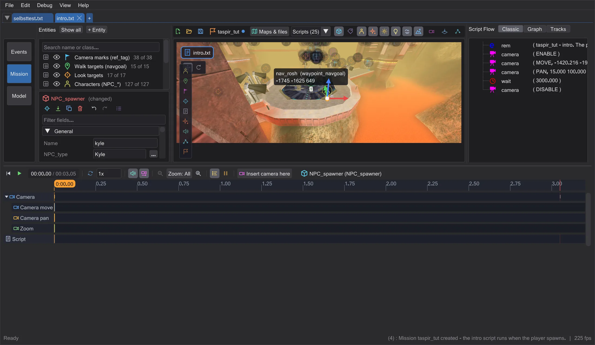
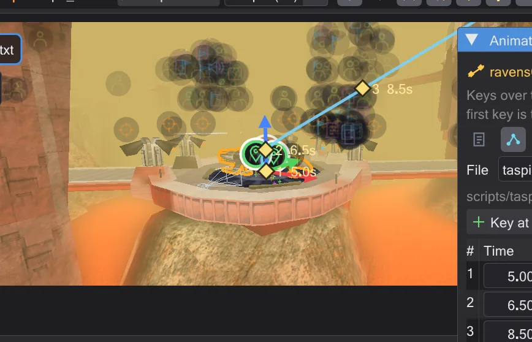
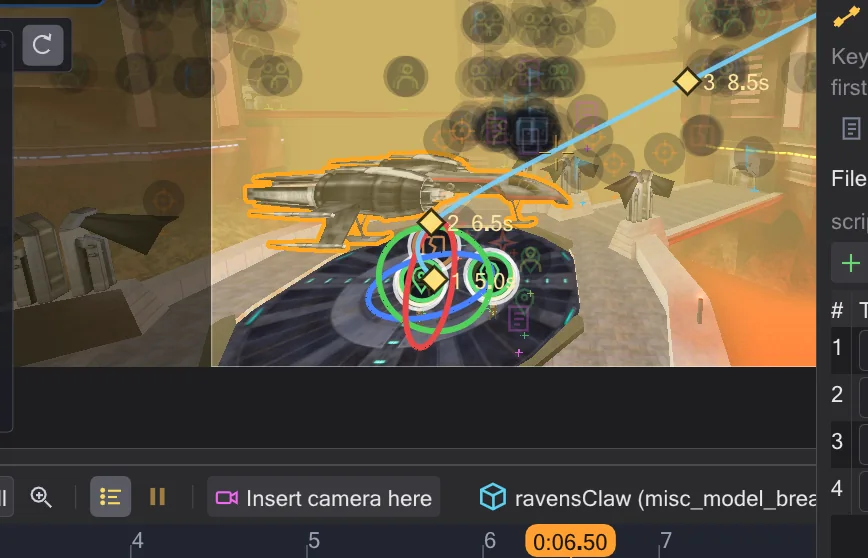

Entities
Everything in a map that a script can talk to - figures, walk targets, camera marks, triggers, ships - is an entity. Select it, change it, move it, place new ones.

The entity list#
The left column sorts the entities into groups - camera marks, walk targets, look targets, characters, script runners, effects, sound, movables, breakables, NPC waypoints. The eye hides a group in the view (Alt+click: show only this one), the search box filters by name or class. Click selects, double-click flies there, right-click inserts a command for it: walk target, look target, affect block, camera to this mark.
Selecting in the view#
Click a marker, a figure or a model to select it; Ctrl/Shift+click adds more; a box dragged over empty space selects everything inside. Hovering shows a box and the name. The transport bar under the map says how often the selected entity is used in the script, with buttons that jump to those lines.
Move and Rotate#
A small bar in the corner of the view switches the gizmo between Move and Rotate. In Move you drag the entity over the floor or along one of the coloured arrows; the grid set in the toolbar snaps, Ctrl turns it off while you drag - without a grid, Ctrl snaps an arrow drag to 8 units. In Rotate you get rings (Ctrl: 15-degree steps): blue turns left and right; ships and models also get green (pitch) and red (roll); figures only have the blue ring, because the game only knows angle for them. Alt+drag copies first. Several selected entities move and turn as a group.




The inspector#
Under the list the inspector shows the selected entity: its class with a description from the game code, Name, Position, Floor (how high the feet stand above the floor - red when inside it) and Facing (degrees), the spawnflags as checkboxes and all other keys as fields. Script fields have Open, NPC_type has a search over every NPC of the game. The icon bar flies there, puts it Onto floor, duplicates, deletes, animates (Animating movers and ROFF files) and shows All keys (raw). Entity changes have their own undo while the mouse is over the map or the list.
Placing new entities#
The tiles on the left edge of the view place the common kinds: character, walk target, camera/look mark, look target, script runner, effect, sound, NPC waypoint, player start. Click a tile, then click in the view - or drag the tile into the view; Shift places several. + Entity above the list and a right-click in the view (New entity here) offer every class. The Grid button snaps to 8, 16, 32 or 64 units.